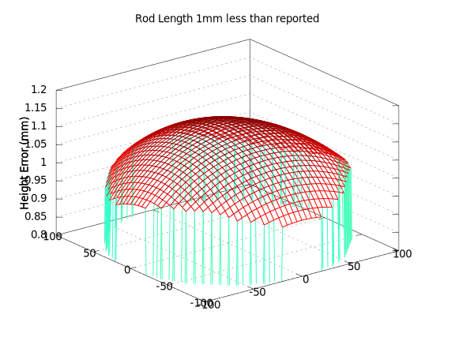
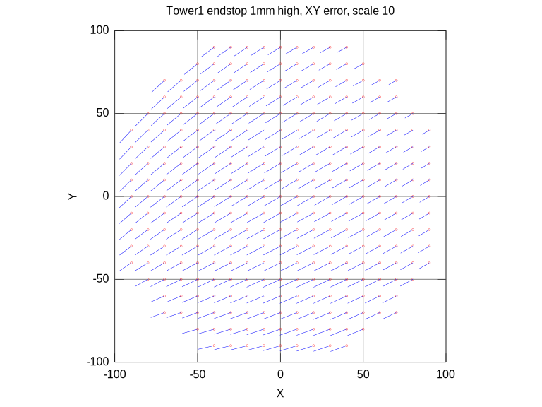

The scale of a printed object depends on the length of the delta rods. Since this dimension is measurable, I prefer to leave it constant as much as possible. If it is mis-measured, you can get bed-scan distortions like these:  You may note that there is a height shift on the close order to the amount of measurement error in the diagonal rod, and a very small curvature distortion, which I will call bowl/dome distortion. Shift up and down is hard to measure, and usually calibrated, so it is hard to measure diagonal rod length errors from bed probes. The bowl/dome distortion is rather small compared to the level shift. These are all reasons why I advocate for measuring diagonal rod length carefully, and holding it fixed for most calibrations.
The rod length can also contribute to scale distortion: Note that the maximun displacement error here is about 0.8mm from a 1mm error, as opposed to around 0.1mm from the bed. It seems that scale is more sensitive to rod length than Z ordinate.
You will note that the distortion from the diagonal rod length is similar to the distortion from a mis-set DELTA_RADIUS: Note that the bowl/dome distortion from this error is about 4x as pronounced as the bowl/dome distortion caused by the same error in delta rod length. This makes DELTA_RADIUS a better candidate for computation by calibration procedures, as compared to the diagonal rod length.
The DELTA_RADIUS is virtual and hard to measure. It would be the distance from the center of pivots on the effector head to the center of the pivots on the tower carriages, when the effector is centered, projected into the ideal bed plane. Since the location of center somewhat arbitrary, and it is hard to measure projections of virtual points into a virtual ideal plane, this measurement is best left to calibration, and not measurement.
Like the rod length, the delta radius can cause a scale distortion in the XY plane:
One of the most common errors would be tower endstop settings.
When these are in error, the primary effect is to produce a tilt to the
bed scan:
This will be the most common distortion, and must be tracked reguarly,
or your prints may not stick to the bed properly, or worse you may crash your
hotend into the bed.
Combine similar errors from all 3 towers, and you can produce
a distortion which is (mostly) a plane of arbitrary tilt.
In the XY plane, the effects of an endstop error are mostly a shift:  The amount of shift varies a little across the plane, but this is secondary to the dominate shift.
I worry that my fabrication skills are not professional class. If my towers do not map out the perfect vertices of an equilateral triangle, I could get distortions like these, if we assume in our motion model that the tower placement was perfect:
A tower placement error in one tower produces mostly a scale distortion, in one direction: When two towers are in error, the distortion is dominate rotational about an axis far off the bed:
Tower placement issues can be addressed by a combination of calibration and better fabrication. My plans for my next build are to laser-cut plates to place the towers to higher precision. It is my hope that this will reduce the tower placement errors.
For the current printer, calibration may be the answer. I intend to review RichieC's work, and perhaps try it out. I do worry that it is prone to overfit and scale errors since it adjusts both DELTA_RADIUS and rod length, the effects of which are hard to discriminate from each other by bed probe data.
For this reason, I propose to hold rod length steady for all bed-probe based calibration
procedures.
Once this part of the calibration has convered, I will print test objects.
The scale of these objects will be measured, and any noted scale error will be evaluated
to estimate a potential change of rod-length setting.
Then bed-probe based calibration will be repeated with the new rod-lenth setting.
Data around bed804c.dat looks fairly typical.
300um range, with zig-zag, initial loose build.
bed812d.dat appears to be a more careful manual scan.
can't say if there is the zig-zag problem.
original data from bed812d_orig.dat shows good repeatability of measurements (FSR?)
bed813c.dat shows zig-zag pattern remains on auto-probe, even when
each point is probed several times. Repeated pronbes good. full data at bed813c_full.dat
Repeated probe scan backwards and forwards.
noting data drift. bed813d.dat
Not sure where this comes from.
Work around on random probe was to re-home periodically.
bed813f.dat shows repeated zig-zag, no drift when scanning forwards and back. 813g verifies that results each probe can be repeated and give same number. no change to zig-zag.
814d shows accuracy drift under random scan. This may have gone away after re-build, but I haven't double checked yet. re-home may no longer be necessary.
bed903d.dat after re-build and re-cal. This may be calibrated, but zig-zag remains on ordered scan.
903e back to random ordered scan. Hard to say if there is zig-zag, but sharp error at tip indicated tower placement issue.
Was not 'scientific' enough to note all experiments, unfortunately. Some scans had trick where I approach from same direction every time. Was able to repeat zig-zag. odd.
Random order seems to spread whatever that zig-zag error was, and produce reliable results.
re-build got rid of drift problem on probes. Perhaps combined with slowing down probe speed.
bed910a.dat, bd910b.dat, random grid, but repeat each probe 3x to see spread. Typical sample spread was 10-25um.
Conclusions
DELTA_RADIUS seems to be fairly stable.
Most of the time, only a tilt/shift correction is necessary.
Better adjustment parameters can be obtained by searching for the optimal
solution which alters only those parameters.
Tilt-only calibration recheck can be done in less than 5 minutes, and only needs to be repeated every several days, and/or when the printer is moved.
It is my hope that more reliable and robust results will be achieved by calibrating the rod-length from XY distortion measurements alone, while all other parameters can be calibrated from measurements of Z plane distortion.
TO DO: add tower radius adjustments to bed-scan optimization. Check RichieC's code. Check state of smoothie... this may be a better candidate firmware.
Try to figure out what tower radius adjustment model really compensates for. I wonder if carriage non-center, would make parallelograms not quite right... tipping effector head? This model seems to assume that all tower carriages are perpendicular to line to ideal center. Most tower mis-alignments will violate this assertion, won't they?